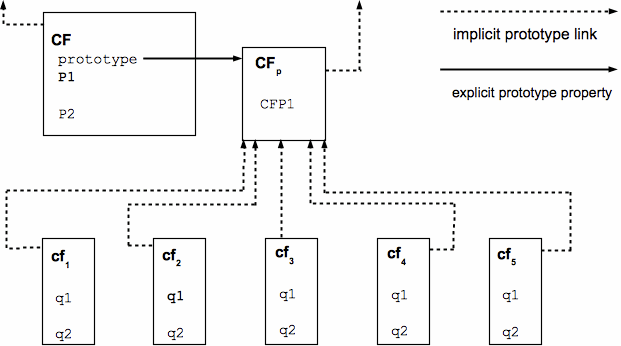

Annotated ECMAScript 5.1


‟Ex igne vita”
‟Ex igne vita”
This section contains a non-normative overview of the ECMAScript language.
ECMAScript is an object-oriented programming language for performing computations and manipulating computational objects within a host environment. ECMAScript as defined here is not intended to be computationally self-sufficient; indeed, there are no provisions in this specification for input of external data or output of computed results. Instead, it is expected that the computational environment of an ECMAScript program will provide not only the objects and other facilities described in this specification but also certain environment-specific host objects, whose description and behaviour are beyond the scope of this specification except to indicate that they may provide certain properties that can be accessed and certain functions that can be called from an ECMAScript program.
A scripting language is a programming language that is used to manipulate, customise, and automate the facilities of an existing system. In such systems, useful functionality is already available through a user interface, and the scripting language is a mechanism for exposing that functionality to program control. In this way, the existing system is said to provide a host environment of objects and facilities, which completes the capabilities of the scripting language. A scripting language is intended for use by both professional and non-professional programmers.
ECMAScript was originally designed to be a Web scripting language, providing a mechanism to enliven Web pages in browsers and to perform server computation as part of a Web-based client-server architecture. ECMAScript can provide core scripting capabilities for a variety of host environments, and therefore the core scripting language is specified in this document apart from any particular host environment.
Some of the facilities of ECMAScript are similar to those used in other programming languages; in particular Java™, Self, and Scheme as described in:
Gosling, James, Bill Joy and Guy Steele. The Java™ Language Specification. Addison Wesley Publishing Co., 1996.
Ungar, David, and Smith, Randall B. Self: The Power of Simplicity. OOPSLA '87 Conference Proceedings, pp. 227–241, Orlando, FL, October 1987.
IEEE Standard for the Scheme Programming Language. IEEE Std 1178-1990.
A web browser provides an ECMAScript host environment for client-side computation including, for instance, objects that represent windows, menus, pop-ups, dialog boxes, text areas, anchors, frames, history, cookies, and input/output. Further, the host environment provides a means to attach scripting code to events such as change of focus, page and image loading, unloading, error and abort, selection, form submission, and mouse actions. Scripting code appears within the HTML and the displayed page is a combination of user interface elements and fixed and computed text and images. The scripting code is reactive to user interaction and there is no need for a main program.
A web server provides a different host environment for server-side computation including objects representing requests, clients, and files; and mechanisms to lock and share data. By using browser-side and server-side scripting together, it is possible to distribute computation between the client and server while providing a customised user interface for a Web-based application.
Each Web browser and server that supports ECMAScript supplies its own host environment, completing the ECMAScript execution environment.
The following is an informal overview of ECMAScript—not all parts of the language are described. This overview is not part of the standard proper.
ECMAScript is object-based: basic language and host facilities are provided by objects, and an ECMAScript program is a cluster of communicating objects. An ECMAScript object is a collection of properties each with zero or more attributes that determine how each property can be used—for example, when the Writable attribute for a property is set to false, any attempt by executed ECMAScript code to change the value of the property fails. Properties are containers that hold other objects, primitive values, or functions. A primitive value is a member of one of the following built-in types: Undefined, Null, Boolean, Number, and String; an object is a member of the remaining built-in type Object; and a function is a callable object. A function that is associated with an object via a property is a method.
ECMAScript defines a collection of built-in objects that round out the definition of ECMAScript entities. These built-in objects include the global object, the Object object, the Function object, the Array object, the String object, the Boolean object, the Number object, the Math object, the Date object, the RegExp object, the JSON object, and the Error objects Error, EvalError, RangeError, ReferenceError, SyntaxError, TypeError and URIError.
ECMAScript also defines a set of built-in operators. ECMAScript operators include various unary operations, multiplicative operators, additive operators, bitwise shift operators, relational operators, equality operators, binary bitwise operators, binary logical operators, assignment operators, and the comma operator.
ECMAScript syntax intentionally resembles Java syntax. ECMAScript syntax is relaxed to enable it to serve as an easy-to-use scripting language. For example, a variable is not required to have its type declared nor are types associated with properties, and defined functions are not required to have their declarations appear textually before calls to them.
ECMAScript
does not use classes such as those in C++, Smalltalk, or Java.
Instead objects may be created in various ways including via a
literal notation or via constructors which create
objects and then execute code that initialises all or part of them
by assigning initial values to their properties. Each constructor is
a function that has a property named “prototype”
that is used to implement prototype-based inheritance
and shared properties. Objects are created by using
constructors in new expressions; for example, new
Date(2009,11) creates a new Date object. Invoking
a constructor without using new has consequences that depend
on the constructor. For example, Date()
produces a string representation of the current date and time rather
than an object.
Every
object created by a constructor has an implicit reference (called
the object’s prototype) to the value of its constructor’s
“prototype”
property. Furthermore, a prototype may have a non-null implicit
reference to its prototype, and so on; this is called the prototype
chain. When a reference is made to a property in an object, that
reference is to the property of that name in the first object in the
prototype chain that contains a property of that name. In other
words, first the object mentioned directly is examined for such a
property; if that object contains the named property, that is the
property to which the reference refers; if that object does not
contain the named property, the prototype for that object is
examined next; and so on.

Figure 1 — Object/Prototype Relationships
In a class-based object-oriented language, in general, state is carried by instances, methods are carried by classes, and inheritance is only of structure and behaviour. In ECMAScript, the state and methods are carried by objects, and structure, behaviour, and state are all inherited.
All objects that do not directly contain a particular property that their prototype contains share that property and its value. Figure 1 illustrates this:
CF
is a constructor (and also an object). Five objects have been
created by using new
expressions: cf1, cf2,
cf3, cf4, and cf5.
Each of these objects contains properties named q1
and q2. The dashed lines
represent the implicit prototype relationship; so, for example,
cf3’s prototype is CFp.
The constructor, CF, has two properties itself, named P1
and P2, which are not
visible to CFp, cf1,
cf2, cf3, cf4,
or cf5. The property named CFP1
in CFp is shared by cf1,
cf2, cf3, cf4,
and cf5 (but not by CF), as are any
properties found in CFp’s implicit
prototype chain that are not named q1,
q2, or CFP1.
Notice that there is no implicit prototype link between CF
and CFp.
Unlike class-based object languages, properties can be added to objects dynamically by assigning values to them. That is, constructors are not required to name or assign values to all or any of the constructed object’s properties. In the above diagram, one could add a new shared property for cf1, cf2, cf3, cf4, and cf5 by assigning a new value to the property in CFp.
The ECMAScript Language recognizes the possibility that some users of the language may wish to restrict their usage of some features available in the language. They might do so in the interests of security, to avoid what they consider to be error-prone features, to get enhanced error checking, or for other reasons of their choosing. In support of this possibility, ECMAScript defines a strict variant of the language. The strict variant of the language excludes some specific syntactic and semantic features of the regular ECMAScript language and modifies the detailed semantics of some features. The strict variant also specifies additional error conditions that must be reported by throwing error exceptions in situations that are not specified as errors by the non-strict form of the language.
The strict variant of ECMAScript is commonly referred to as the strict mode of the language. Strict mode selection and use of the strict mode syntax and semantics of ECMAScript is explicitly made at the level of individual ECMAScript code units. Because strict mode is selected at the level of a syntactic code unit, strict mode only imposes restrictions that have local effect within such a code unit. Strict mode does not restrict or modify any aspect of the ECMAScript semantics that must operate consistently across multiple code units. A complete ECMAScript program may be composed for both strict mode and non-strict mode ECMAScript code units. In this case, strict mode only applies when actually executing code that is defined within a strict mode code unit.
In order to conform to this specification, an ECMAScript implementation must implement both the full unrestricted ECMAScript language and the strict mode variant of the ECMAScript language as defined by this specification. In addition, an implementation must support the combination of unrestricted and strict mode code units into a single composite program.
For the purposes of this document, the following terms and definitions apply.
set of data values as defined in Clause 8 of this specification.
member of one of the types Undefined, Null, Boolean, Number, or String as defined in Clause 8.
NOTE A primitive value is a datum that is represented directly at the lowest level of the language implementation.
member of the type Object.
NOTE An object is a collection of properties and has a single prototype object. The prototype may be the null value.
Function object that creates and initialises objects.
NOTE The
value of a constructor’s “prototype”
property is a prototype object that is used to implement inheritance
and shared properties.
object that provides shared properties for other objects.
NOTE When
a constructor creates an object, that object implicitly references
the constructor’s “prototype”
property for the purpose of resolving property references. The
constructor’s “prototype”
property can be referenced by the program expression
constructor.prototype,
and properties added to an object’s prototype are shared, through
inheritance, by all objects sharing the prototype. Alternatively, a
new object may be created with an explicitly specified prototype by
using the Object.create
built-in function.
object in an ECMAScript implementation whose semantics are fully defined by this specification rather than by the host environment.
NOTE Standard native objects are defined in this specification. Some native objects are built-in; others may be constructed during the course of execution of an ECMAScript program.
object supplied by an ECMAScript implementation, independent of the host environment, that is present at the start of the execution of an ECMAScript program.
NOTE Standard built-in objects are defined in this specification, and an ECMAScript implementation may specify and define others. Every built-in object is a native object. A built-in constructor is a built-in object that is also a constructor.
object supplied by the host environment to complete the execution environment of ECMAScript.
NOTE Any object that is not native is a host object.
primitive value used when a variable has not been assigned a value.
type whose sole value is the undefined value.
primitive value that represents the intentional absence of any object value.
type whose sole value is the null value.
member of the Boolean type.
NOTE There are only two Boolean values, true and false.
type consisting of the primitive values true and false.
member
of the Object type that is an instance of the standard built-in
Boolean
constructor.
NOTE A
Boolean object is created by using the Boolean
constructor in a new
expression, supplying a Boolean value as an argument. The resulting
object has an internal property whose value is the Boolean value. A
Boolean object can be coerced to a Boolean value.
primitive value that is a finite ordered sequence of zero or more 16-bit unsigned integer.
NOTE A String value is a member of the String type. Each integer value in the sequence usually represents a single 16-bit unit of UTF-16 text. However, ECMAScript does not place any restrictions or requirements on the values except that they must be 16-bit unsigned integers.
set of all possible String values.
member
of the Object type that is an instance of the standard built-in
String
constructor.
NOTE A
String object is created by using the String
constructor in a new
expression, supplying a String value as an argument. The resulting
object has an internal property whose value is the String value. A
String object can be coerced to a String value by calling the String
constructor as a function (15.5.1).
primitive value corresponding to a double-precision 64-bit binary format IEEE 754 value.
NOTE A Number value is a member of the Number type and is a direct representation of a number.
set of all possible Number values including the special “Not-a-Number” (NaN) values, positive infinity, and negative infinity.
member
of the Object type that is an instance of the standard built-in
Number
constructor.
NOTE A
Number object is created by using the Number
constructor in a new
expression, supplying a Number value as an argument. The resulting
object has an internal property whose value is the Number value. A
Number object can be coerced to a Number value by calling the Number
constructor as a function (15.7.1).
Number value that is the positive infinite Number value.
Number value that is a IEEE 754 “Not-a-Number” value.
member
of the Object type that is an instance of the standard built-in
Function
constructor and that may be invoked as a subroutine.
NOTE In addition to its named properties, a function contains executable code and state that determine how it behaves when invoked. A function’s code may or may not be written in ECMAScript.
built-in object that is a function.
NOTE Examples
of built-in functions include parseInt
and Math.exp. An
implementation may provide implementation-dependent built-in
functions that are not described in this specification.
association between a name and a value that is a part of an object.
NOTE Depending upon the form of the property the value may be represented either directly as a data value (a primitive value, an object, or a function object) or indirectly by a pair of accessor functions.
function that is the value of a property.
NOTE When a function is called as a method of an object, the object is passed to the function as its this value.
method that is a built-in function.
NOTE Standard built-in methods are defined in this specification, and an ECMAScript implementation may specify and provide other additional built-in methods.
internal value that defines some characteristic of a property.
property that is directly contained by its object.
property of an object that is not an own property but is a property (either own or inherited) of the object’s prototype.